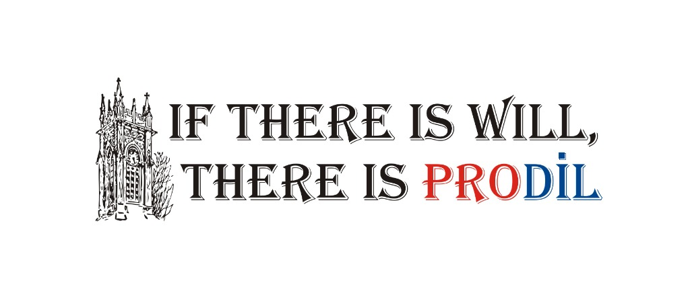

YKS-YDT (Yabancı Dil Testi) maratonunda hedefiniz İngilizce Öğretmenliği, İngiliz Dili ve Edebiyatı, Mütercim Tercümanlık veya Japonca/Çince gibi prestijli bölümlerse, doğru yerdesiniz.
Prodil Dil Kursu olarak, akademik sınavlara yönelik nokta atışı müfredatımız ve yılların getirdiği sınav tecrübemizle, Sakarya'da dil bölümü öğrencilerinin en çok tercih ettiği kurum olmanın haklı gururunu yaşıyoruz.
"Sadece dil öğretmiyoruz; sizi hayallerinizdeki kampüse taşıyan stratejiyi kuruyoruz."
Dil öğreniminde sizi başarıya götürecek standartlarımız ve öğrencilerimizin gerçek deneyimleri.
Alanında uzman kadromuzla Grammar, Vocabulary ve Skills branşlarında 2003'ten beri Sakarya'da aralıksız hizmet vermekteyiz.
Teknoloji destekli sınıflar, zengin interaktif materyaller ve öğrenci odaklı dijital altyapımızla çağdaş eğitim ortamı.
Soru kökü analizi, çeldirici eleme taktikleri ve zaman yönetimi stratejileri ile YKS-YDT'de maksimum net hedefliyoruz.
YDS, DİLKO, ELS ve MODERN ENGLISH başta olmak üzere Türkiye'nin en seçkin yayınlarının soru bankaları ve denemeleri.
Dönem başı seviye tespit sınavlarıyla homojen sınıflar oluşturulur; öğrencinin gelişimine göre dinamik grup geçişi yapılır.
Öğretmenlerimiz ve rehberlik servisimizce öğrenci gelişimi, ödevler ve deneme analizleri haftalık olarak birebir takip edilir.
Sakarya Prodil Dil Merkezi
Sayelerinde Anadolu Üniversitesi’ni kazandığım dershane. Ortamı aşırı samimi, hocalarım sağolsunlar her stresli anımda yardımcı oldular ve özellikle Selman Hoca olmak ile birlikte fiğer hocalarım da tabikii kaynak ve danışmanlık konusunfa oldukça yardımcı oldular. Tercih edilebilecek en güvenilebilir ve profesyonel yer kesinlikle tavsiye ediyorum
Prodil sayesinde İngilizcemi neredeyse 2-3 seviye arttırdım. Hayatımda aldığım en iyi kararlardandı 💕💕
Sadece keyifle geçen bir hazırlık yılı değil aynı zamanda beni başarıya götüren bir yer oldu, yerini asla değişmem👍🏻 …
Profesyonel ve güvenilir ekip.
Eğitim öğretim sınava hazırlık konusunda rakiplerinden çok önde olan bir kurum. Öğretmen kadrosu olarak da çok başarılı. Sınav kazanamamak gibi bir seçeneğiniz çok zor.
Sakarya’nın en iyi dil dershanesi
Harika bir kurs. Hocalar çok anlayışlı. Dönemin başından sonuna kadar en ince ayrıntıyla ilgileniyorlar. Çok nezih bir kurum
Kesinlikle gönül rahatlığıyla tercih edilebilir. Başta Selman hocamız olmak üzere bütün hocalarımız alanlarında fazlasıyla yetkinler. Yine sınava hazırlansam yine tercih ederdim.
Verilen ücretin son kuruşuna kadar hakkını veren bir kurum. Yıllar önce Selman ve Müjdat hocamın sırasından geçtik. Onların izinden devam ediyoruz. Hala daha gözüm kapalı olarak önerdiğim tek kurum.
Kaliteli öğretmen kadrosu, sonsuz destek ve kaynakla hedefi olan öğrencilerin en doğru seçimi
Başta Selman hocam olmak üzere, tüm hocalarımın bende emekleri vardır. Ydt özelinde aldığım eğitimden çok memnundum. Herkesin de aynı kanaatte olacağı kanısındayım.
Harika bir kurum. Öğretmenler aşırı ilgili ve destekleyici.
Eğitmenleriyle ayrı bize kattıkları ile ayrı bir kurumdu. Lise zamanımın en güzel anılarının geçtiği yer diyebilirim. Hem okulumun bana katmadığı ve veremediği eğitimi verdiler hem de bizleri en çok zorlayan sınavları yaptılar. Ama her zorlandığımızda özellikle Selman Hoca bu sınavları yaptıysanız üniversite sınavının onun ne kadar kolay geleceğini anlayacaksınız derdi. Ve gerçekten de öyle oldu. Tüm hocalarıma çok teşekkür ederim buradan. Umarım bizler gibi harika bir eğitim alıp çok güzel zamanlar geçirebilirsiniz.
Tüm hocaların güleryüzü,ilgisi asla eksik olmadan tamamiyle eğitime adanmış bir kurs. Dil eğitimi,sınava hazırlık noktasında gidilebilecek tek adres. Kalteli eğitim ve hizmet verdikleri için herkesi ayrı ayrı tebrik ediyorum. Başarılarınız daim olsun👏🏻 …
Sakaryada dil öğrencilerinin gidebileceği en iyi kurum, gerek hocalar gerek de verdikleri kaynaklar sizi başarıya ulaştıracaktır.
2016 yılında sınava hazırlanırken tercih ettiğim Prodil’i çevremde de İngilizce sınavına hazırlanmak isteyen birçok kişiye önerdim. Alanında uzman hocalarım sayesinde ilk senemde İngilizce öğretmenliğini kazandım. Şu an İngilizce öğretmeni olarak görev yapmaktayım. Emekleriniz için teşekkür ederim.
YDT’ye hazırlanırken tercih etmiştim. Şu an İngilizce öğretmeniyim. Selman ve Müjdat hocalar olsun, diğer branş öğretmenleri olsun hepsinin üzerimde çok emeği var. Zamanında çok memnun kalmıştım. Tekrar sınava hazırlansam yine Prodil’i tercih ederim.
Sakaryada ve çevre illerde alanının en iyi öğretmen kadrosunu bulunduruyor. 2018 YDT sınavına girdiğimde yüksek netler yapmamın ve şu an bir yerlere gelmiş olmamın sebebi. Öğrencilik hayatıma bir daha dönsem tekrardan prodile gidip sınava hazırlanırdım
YDT sınavım için tercih ettiğim bir kurs ve oldukça memnun kaldım, kesinlikle öneriyorum. Profesyonel, çözüm odaklı ve gerek kursta gerekse evde bile yardımcı olan hocalarıma da çok teşekkür ediyorum.
Üniversite sınavına İngilizce bölümünden hazırlanacaklara Sakarya’da önerebileceğim tek yer
Prodil sayesinde sınavda 5 bin sıralama yaptım. Onların emeği ve desteği sayesinde şu an İngilizce öğretmeniyim.
Sakarya’da dil eğitimi konusunda en iyisi diyebilirim. Bu kurum sayesinde istediğim yere ve bölüme yerleştim. Yaptığım mesleği icra edebiliyor olmamda katkıları çok büyük. Teşekkür ederim.
Sakaryada dil konusunda üstüne tanımayacağım kurum. Bir daha sınava hazırlanıcak olsam yine tercih ederdim. Hocalar öğrencileri birçok kaynaktan özverili bir şekilde sınava hazırlıyorlar, bu şekilde bir eğitim kalitesini başka bir kurumda bulmak zor.
Hocalarımı 2019dan beri tanırım gerek orada öğrencileriyken gerek okulu bitirdiğimde hiçbir zaman ilgilerini eksik etmediler. Sakarya'da ydt deyince ilk adres Prodil. :)
Prodil ile 12. Sınıf Dil öğrencisi olarak çıktığım yolda başta Selman hocam ve diğer hocalarımızın da desteğiyle şuanda bir İngilizce Öğretmeni olarak kendilerine teşekkür ediyorum.
Hedefleriniz varsa hedefinize giden, emin değilseniz hedefinizi bulduran kurum. Bir kurs kurumdan çok aile ortamı var. Piyasasında da tektir. Kesinlikle tavsiye ediyorum.
Hayatımda aldığım en iyi dil eğitimini burda aldım ama sadece eğitim almak ile kalmadık, pandemi döneminde bile daha iyi olalım diye kapı kapı gezip bize kaynak getiren hocalarımız sayesinde başardık. Hocalarımız bize hem arkadaş oldu hem eğitimci eğer şuan ingilizce öğretmeni isem 3 değerli hocam ve onların başarısı sayesinde .
Değerli öğretmenlerime milyonlarca şükürler olsun. Prodil’den aldığım eğitim sayesinde istediğim üniversitede istediğimi bölümü okuma şansı yakaladım ve şu anda İngilizce öğretmenliği yapıyorum. Her şey için teşekkür ederim değerli hocalarım.
Sakaryada gidebileceğiniz en kaliteli dil kursudur.Hocaların sınavlara ve sisteme olan hakimiyeti sayesinde gireceğiniz sınavları avuç içiniz gibi öğreniyorsunuz.Seviyeniz ne kadar düşük olursa olsun istediğiniz seviyeye getiriyorlar sizi.Hocalar güler yüzlü ve sizi sizden cok düşünen insanlar.Her konuda sizin icin ellerinden geleni yapmaya çalışan insanlar.
Üç yıl boyunca İngilizce eğitimi aldığım bu dershane hocalarımın ilgi ve destekleriyle üniversite sınavına hazırlanmamda ve bugün hayalini kurduğum mesleğe bir adım daha yaklaşmamda bana büyük katkı sağladı. Şu an Kıbrıs’ta İngilizce Öğretmenliği son sınıf öğrencisiyim ve stajımı yapıyorum. Bu süreçte emeği geçen Selman Hocama, Mustafa Hocama ve Müjdat Hocama sonsuz teşekkürlerimi iletiyorum. Umarım bir gün biz de sizler gibi öğrencilerinin hayatına dokunan, değerli ve kıymetli öğretmenler olur ve sizden öğrendiklerimizi geleceğin nesillerine aktararak bu güzel mesleği en iyi şekilde devam ettiririz. İyi ki yollarımız kesişmiş! Gönül rahatlığıyla tavsiye ediyorum.🌸
İngilizce için sakarya’da tek
2 yıl burada sınava hazırlandım.İşini başarılı ve profesyonel bir şekilde yapan bir kurum.Ydtye hazırlanacaklara tavsiye ederim
Prodil, alanında uzman ve deneyimli öğretmen kadrosuyla çok memnun kaldığım bir kurum olmuştur.Bence başarıya giden yolda sizi doğru yönlendirecek öğretmeni bulmak çok büyük bi şanş. Hedeflerinize ulaşmak istiyorsanız Prodil i kesinlikle tavsiye ederim.
Hiç düşünmeden gönül rahatlığıyla tercih edebileceğiniz bir kurum. Hocaların alanlarında yetkinliği, kurum ortamı, kaynakların çeşitliliğiyle sınavlara hazırlanırken iyi ki buradayım dedirtiyor. Ben de iyi ki tercih etmişim sonsuz önerimdir 😊 …
Prodil’de iki senem geçti, sonrasında istediğim bölüme yerleştim. Tabii ki her zaman yanımızda olan hocalarım sayesinde. Bizlere her zaman bıkmadan usanmadan takıldığımız yerleri anlattılar. Dil sınavına hazırlanmak isteyen tüm öğrencilere tavsiye edebilirim.
İyiki Prodil🥇Ben üniversite hazırlık sürecinde gittim prodil’e. 12.sınıfta başladım mezun senemde de prodil’i tercih ettim. Hocalar zaten çok bilgili ve çok güzel, anlaşılır anlatıyorlar. Onun dışında anlayışlılar ama disiplinlilerde. Çok memnunum yani. Hala da görmeye giderim hocalarımı 🌸🙏🏼 …
Sınava yönelik ders anlatımı sayesinde YKS ve YDT sınavları formatında eğitim veren kaliteli bir dershane. Dersler hem öğretici hem eğlenceli geçtiği için öğrencileri sıkmadan sınava hazırlıyor
2018 yılında Prodil Dil Kursu’nda eğitim aldım Selman Hoca, Müjdat Hoca ve Mustafa Hocadan dersler aldım. Beni hedeflerime ulaşmam için o kadar iyi hazırladılar ki hayalini kurduğum İngiliz Dili ve Edebiyatı bölümünü kazandım. Motivasyonları , destekleri ve kaliteli eğitimleri için tüm hocalarıma tek tek , çok teşekkür ederim.Emeklerine sağlık.
Üniversiteye hazırlanma sürecimde İngilizce eğitimi aldığım ve güzel anılar biriktirdiğim bir kurstu. 🥹🤍 Hocalarımızın ilgisi, samimiyeti ve öğrencilerine karşı olan destekleyici tutumları sayesinde çok güzel bir eğitim süreci geçirdim. Bana kattıkları ve üzerimde bıraktıkları güzel izler için tüm hocalarıma çok teşekkür ederim. İyi ki yollarımız kesişmiş, gönül rahatlığıyla tavsiye ediyorum. 🌸✨
Hocalarımın kıymetli bilgisi ve ilgisi sayesinde istediğim ingilizce öğretmenliği bölümünü tam burslu olarak kazandım , okudum ve mezun oldum. Herkese prodil ailesinin bir üyesi olmalarını gönülden tavsiye ederim, her şey için teşekkürler prodil.❤️
İşini severek yapan öğretmenleriyle hakkıyla öğrencilerini takip ediyorlar. Sadece bir eğitim kurumu olmamakla beraber bir öğretim yuvası ayrıca. Zamanında geldiğim için çok memnunum YDT-TYT hazırlanmak isteyen her arkadaşa tavsiyemdir.
Bir dil öğrencisi olarak çıkıp, şuanda atanmış bir ingilizce öğretmeni olarak yorumumu yapıyorum. Yorum bu kadar :)
Eğitim kalitesi, öğretmenlerin ilgisi ve samimi ortamıyla çok memnun kaldığım bir kurumdu. Emekleri ve destekleri için herkese teşekkür ederim, kesinlikle tavsiye ederim.
İyi ki tercih etmişim dediğim bi kurum .Hem öğretmenlerin kalitesi hem de öğrencilere gösterilen ilgi muhteşem! Zamanda üniversite sınavına çalışan bir dil öğrencisi olarak bu süreci daha keyifli ve verimli hale getiren tüm öğretmenlere ve çalışanlara teşekkür ederim .
Prodilde yaklaşık 4 sene dil eğitimi aldım, gerek öğretmenlerin kalitesi, gerek öğrencilerle birer birer ilgilenip onlara özel program oluşturmak olsun daha sayamadığım bir çok şey vardır elbet. Burda aldığım eğitim sayesinde üniversitede istediğim bölümü okuyup bitirdim. Gönül rahatlığıyla burayı tavsiye ederim.
Lise dönemimde sınavlara hazırlanmak için yollarımızın kesiştiği bu kuruma, geçmişte ve bugün sunduğu hizmetler için teşekkür ediyorum. İş ahlakı, disiplin anlayışı ve eğitim alanındaki özverileriyle güven veren, sağlam bir kurum olduklarını düşünüyorum. Öğrencilerine sundukları emek ve katkılar için tüm ekibe teşekkürlerimi sunuyorum. Başarılarının devamını diliyorum.
Hayatımın en güzel kararı Prodil’e kayıt olmaktı.Hem ydt hem tyt için her şeyi baştan ve çok kolay bir şekilde öğrendik😍🤍 …
Üniversiteye giden yolda en doğru tercih.. Tekrar okusam tekrar prodili tercih ederdim..
İngilizce’nin farklı yönlerini işini profesyonelce ve titizlikle yapan üç tane öğretmenin detaylı ve öğrencinin anlayabileceği şekilde öğretmesi çok şey katıyor. Eğitim sürecimde her anlamda çok destek oldular, herkese tavsiye ederim.
Gerek hocaların profesyonel yaklaşımı , gerek ders sonrasi bile samimi geri dönüşleri ve rehberliği sayesinde İngilizce mi çok daha iyi yerlere getirdim.
Bir hocam var ki hayatıma dokundu.., Hacettepeden mezun oldum çalışıyorum. Hem akademik destek hem de moral motivasyon açısından bir numaralar. Akademik kadro deseniz süper. Bir eksi aklıma dahi gelmiyor, bu kurum benim için birdir. Selman hocama sonsuz sevgiler <3
YDS sınavına Prodil ile hazırlandım. Bir senede çok şey öğrendim ve çok iyi bir eğitim aldım. Şimdi Sakarya Üniversitesi’nde İngilizce Öğretmenliği okuyorum. Öğretmenlerimin verdiği emek ve gösterdiği ilgiyi umarım ben de öğrencilerime onlar kadar iyi verebilirim. Prodilli olmak ayrıcalıktır. Bizden iyisi yine bizden birisi.
Sartlari guzel degerlendirirseniz cok guzel sekilde hazirlanabilirsiniz sinavlara hocalar herkesin ustune ayri ayri dusuyor herkesin ilerlemesini inceliyolar ve hocalarin ders yontemleride cok etkili hem eglenip hem ders calisma ciddiyetini ayni anda goturebilirsiniz.
ProDil İngilizce Kursu’nda eğitim aldığım süre boyunca çok güzel bir deneyim yaşadım. Öğretmenlerin ilgisi ve desteği sayesinde kurs sürecim çok daha keyifli geçti. Öğrencileriyle ilgilenen ve onların gelişimini önemseyen bir kurum. Herkese gönül rahatlığıyla tavsiye ederim!
İşini hakkıyla yapan bir kurum.Gerek öğretmenler gerek materyaller her şey mükemmeldi.Seni özlüyorum prodil.
Prodil'in benim ingilizceme çok büyük bir katkısı oldu. Hocalarımızın hepsi çok ilgili ve güler yüzlüydüler. Dersleri anlaşılır ve eğlenceli bir şekilde işliyorlardı. Soru sorduğumuzda soruları güzel bir şekilde açıkladılar. Ders çalışma temposu da çok güzeldi. Gerçekten sınava yönelik öğrenci hazırlıyorlar. Kullandıkları ders kaynakları kaliteli kaynaklar. Sık sık deneme çözdürüyorlardı ki bu sınava hazırlanan öğrenciler için çok önemli bir şey. Gönül rahatlığıyla tavsiye ederim.
Müjdat, Mustafa ve Selman hocalarım soru tiplerini çözmeyi, kelime ve okuma taktiklerini gerçekten çok pratik bir şekilde öğrettiler. Ydt sınav mantığına hâkimiyetleri ve ilgileri bana çok şey kattı. Çözemediğim her soruda bıkmadan yardımcı oldular ve sınav stresini yönetmemi sağladılar. Emekleri için her birine teşekkür ederim, gönül rahatlığıyla prodili tavsiye ederim
üç ayrı hocamız da çok değerli ve alanında oldukça başarılı hocalarımız. Aldığım eğitim kalitesi kesinlikle beklediğimden çok daha fazlasıydı.Çok memnun bir şekilde bitirdim eğitimimi ve herkese de tavsiye ederim.
İngilizce konusunda çok ilgili bir kurum. Hocalarım sayesinde gerek grammer olsun gerek reading ve skills olsun bana çok şey kattı. Yoğun soru çözümleri ve analizler ingilizcemi çok ilerletti. TYT için de her konu sonunda soru çözümü ve sınıfça yapılan analizler sayesinde hatalarımın nerelerde olduğunu ve nasıl düzeltebileceğimi öğrendim. Kesinlikle tavsiye ediyorum.
Sakarya'da dil eğitiminde kesinlikle en iyisi Prodil YDT'de 79 doğru yapabilmem alanlarında en iyisi olan hocalarımın sayesinde, düşünmeden tercih edebilirsiniz 🙏🏻 …
Mezuna bırakıp prodile kayıt olmuştum. Ydt sinavimda hocalarım sayelerinde başarılı oldum şu an o zamanlar hayal ettiğim üniversitemin 4. Senesindeyim. Sınav senemde hocalarım saat farketmeksizin WhatsAppdan sorularım hep cevap veriyorlardı. Derste kullandıkları materyaller gerçekten kaliteli. Hocalarim alanında çok iyi. Sadece İngilizce bilgileri ile değil ayrıca öğrenciye yaklaşım tarzları ile eğitimde fark yaratıyorlar. Öğrenci okumak her öğretmenin yapabilicegi bir şey değil fakat profil bu konuda da iyi. Kesinlikle tavsiye ederim.
2023 Pro Dil mezunuyum. Hâlâ değerli hocalarımla iletişim hâlindeyiz ve onların bana kattığı bilgileri bugün bile kullanıyorum. Üniversiteyi kazanma yolculuğumda en büyük destekçilerimden oldular. İyi ki yollarımız kesişmiş. Tekrar olsa, yine Pro Dil! ✨
Universite sınavına Hazirlama konusunda harika bir yer tavsiye ederim
Benim de önceden öğrencisi olduğum Prodil, dil eğitimi konusunda gerçekten başarılı bir kurum. Zengin ve çeşitli materyalleri, öğrencilerin seviyelerine uygun sınıfları ve doğru öğrenme stratejileriyle(özellikle yanlış şık eleme teknikleri)verimli bir eğitim ortamı sunuyor. Deneyimli, işini hakkıyla yapan öğretmenleri yalnızca akademik anlamda değil; manevi açıdan da öğrencilerini her zaman destekliyor, bir aile ortamı sunuyor. Üniversite sınavına(YDT) hazırlanan dilcilere gönül rahatlığıyla tavsiye ederim.
olmasalar gerçek anlamda olmazdım. mezun olalı 4 sene oluyor prodildeki hocalarımla hala iletişim halindeyiz, iyi yerlere gelmemde %85 onların emeği, ilgisi var. prodil sadece bir gelecek değil size harika insanlar da kazandırıyor. 4 sene geçmesine ve mezun olmama rağmen hala ilk günkü gibi her konuda ilgililer. 4 senedir canı gönülden herkese öneriyorum önermeye de devam edicem, iyi ki varlar <3
Hocalarımızın hepsi çok iyi ve her öğrenciyle birebir ilgileniyorlar. Dersler hem eğlenceli hem de oldukça verimli geçiyor. Öğrencilere sayamayacağınız kadar çok ek materyal sunuluyor, farklı kaynaklar kullanılıyor ve çeşitli soru tipleriyle pratik çözüm yöntemleri öğretiliyor. Ben YDT’ye hazırlanırken Prodil’e gitmiştim. Selman Hoca, Müjdat Hoca ve Mustafa Hoca sayesinde YDT’de çok yüksek bir net yaptım. Hem derslerin kalitesi hem de hocaların desteği sayesinde sınava çok daha iyi hazırlandım. Tekrar sınava hazırlansam hiç düşünmeden yine Prodil’i seçerdim. Oradaki herkesi çok seviyorum ve emekleri, destekleri için hepsine çok teşekkür ediyorum. ❤️
Gerek derslerin en modern ve etkili şekilde işlenmesi, gerek özellikle ydt sınavı bazında tüm soru tarzlarının etkili çözüm teknikleriyle gösterilmesi ve kurumda ki eğitmenlerin kalitesi ingilizcede kendini geliştirmek ve hayallerini gerçekleştirmek isteyenler için harika bir eğitim merkezi.
Bir veli olarak gönül rahatlığıyla tavsiye edebileceğim bir kurum. 🌸 Kızım, iki yıl önce bu dershanenin ve kıymetli öğretmenlerinin emekleri sayesinde üniversitede İngilizce bölümünü kazandı. Dil eğitimindeki başarıları, öğretmenlerin ilgisi alakası ve öğrencilere verdikleri destek gerçekten takdire değer. Emeği geçen herkese gönülden teşekkür ediyorum. Başarılarınız daim olsun! 👏
Gerçekten çok güzel bir eğitim ortamı var. Öğretmenleri çok ilgili ve samimi, her konuda yardımcı olmaya çalışıyorlar. Güzel anılarla ayrıldığım, gönül rahatlığıyla tavsiye edebileceğim bir kurum. ❤️
Alanında uzman ve deneyimli eğitmenleri, zengin kaynak çeşitliliği ve bol miktarda soru çözme imkânıyla sınava hazırlık sürecini oldukça verimli hâle getiriyor. Yıllara dayanan tecrübeleri sayesinde sınavın inceliklerine hâkim olmaları ve öğrencilere doğru yönlendirmeler yapmaları da büyük bir avantaj. Hem eğitim kalitesi hem de sundukları kaynaklarla başarıya ulaşmak isteyenler için kesinlikle tercih edilebilecek bir kurum.
YDT hazırlık sürecimde bana kattıkları emekleri için çok teşekkür ederim.İyi ki yolum Prodil ile kesişmiş.Öğrencileri ile gerçekten ilgilenen, emek veren ve başarıya giden yolda yol gösteren bir eğitim ortamı.YDT’ye hazırlanan ve kendini geliştirmek isteyen herkese gönül rahatlığıyla tavsiye ederim.
Prodil Dershaneden çok memnun kaldım. Bana çok yardımcı oldular, emekleri ve destekleri için çok teşekkür ederim🙏🏻 …
Hazırlık sürecimde bana kattığı her şey için kuruma çok teşekkür ederim. Özellikle İngilizce öğretmenlerimizin ilgisi, bilgisi ve yaklaşımı gerçekten harikaydı. Kendi hedefim doğrultusunda dil kadrosundan maksimum verimi aldım. Sıcak ve aile ortamı tadındaki bu süreç için emeği geçen her bir hocama teşekkür ederim."
Verdikleri eğitim sayesınde sıralamamı 60 bin ileri cektim cok egitimli bilgili kisilerin oldugu bır dershane 💗💗💗 …
Hocaların ilgisi çok güzel. Kaliteli kaynaklarla bol soru çözerek öğretiyorlar. Ders aralarında bile yardımcı olmaya çalışıyorlar. Haklarını ödeyemem.Geldiğinize asla pişman olmayacağınız bir dershane.💖 …
Üniversite sınavına hazırlanırken hem Tyt hemde Ydt için Prodil'i tercih etmiştim. Öğretmenler alanlarındaki bilgileri ve konuları anlaşılır bir şekilde anlatıyor gerektiğinde öğrencilerle birebir ilgileniyorlar. Sadece ders anlamında değil, motivasyon açısındanda tüm öğretmenlerimiz (özelliklede Rehber öğretmenimiz ) bize çok katkıda bulundular. Girdiğimiz tüm sınavlar ne kadar sürede ne kadar geliştiğimize yönelik takip ediliyor ve haftalık analiz yapılıyor. Özellikle Ydt sınavına hazırlık için destek almayı düşünen tüm öğrencilere tavsiye ediyorum. Sadece ingilizce bilmek yetmiyor ayni zamanda sınavın mantığını kavramak ve nasıl çözülmesi gerektiğini öğrenmek lazım. 3 ingilizce öğretmenimizde sınava yönelik pratik bilgiler ve doğru test çözme yöntemlerini öğretiyorlar. Bu tyt alanındaki dersler içinde geçerli. Öğretmenlerin bu kadar ilgili olması çok iyi bir avantaj ama en sonunda iş kişinin kendisinde bitiyor. Nereye giderseniz gidin siz çalışmadıkça bir mucize yaşanmayacak. Destekleri ve ilgileri için tüm öğretmenlerime teşekkür ediyorum.
Birkaç net yapabilecek seviyedyken başladığım kursta gerek hafta sonları, gerek kendi ders aralarında bile ekstradan yardımcı olan, sonuçların kötü geldiği zamanlarda bana benden daha çok güvenen hocalarıma tesekkurler gercekten cok guzel bir kurs🫶🏻
2 sene burada eğitim görmüş biri olarak çok memnun kaldım. Her öğretmen işini hakkıyla yapıyor diyebilirim.
Birkaç net yapabilecek seviyede iken başladığım yolda gerek hafta sonları, gerek kendi ders aralarında bile ekstradan yardımcı olan, sonuçların kötü geldiği dönemlerde bana benden daha çok güvenen hocalarıma teşekkür ediyorum. Bizden iyisi, yine bizden birisi:)
Universite senemde Prodile gitmistim. Gerek hocalarin ilgi ve alakasi gerek guleryuzlulugu her bakima cok memnun kalmistim. Ders anlatimlari ve kaynak cesitliligi cok guzel ve verimli gercekten de. Su an tekrar gidecek olsaydim yine Prodili tercih ederdim.
Harika bir kurs.
Thanks to Prodil, proper planning always leads to success.
Sakarya Prodil bu işin gerçekten piri. Her şey çok sistemli ilerliyor. Selman Hocam da çok ilgili, her konuda yardımcı oluyor. Dediklerini uygulayın, düzenli çalışın, gerisi geliyor zaten. Dil bölümünde iyi bir yer kazanmak ya da YDS'de yüksek puan almak isteyen herkese gönül rahatlığıyla tavsiye ederim.
Hocalarıyla, eğitim anlayışıyla ve kalitesiyle bana çok katkısı olmuş, her dil bölümü öğrencisine önerebileceğim kurumdur.
Yıllardır sınav odaklı çalışan tecrübeli isimler.
Prodil Dershanesi, İngilizce öğretmenliği yolculuğumda benim için çok önemli bir yere sahip. 💙 Burada aldığım eğitim ve kazandığım sağlam temelin sayesinde İngilizce öğretmenliği bölümünü kazandım ve bugün hayalini kurduğum mesleği yapıyor olmanın mutluluğunu yaşıyorum. Özellikle Selman Hoca’nın emeği, desteği ve öğrencilerine olan ilgisi benim için çok kıymetliydi.Bana kattıkları ve bu süreçte üzerimde bıraktığı emek için kendisine ayrıca teşekkür ediyorum.Beni hedefime ulaştıran bu güzel kurumun bir mezunu olmaktan gurur duyuyorum.İngilizce öğrenmek ve hedeflerine ulaşmak isteyen herkese gönül rahatlığıyla tavsiye ederim.Emeği geçen herkese çok teşekkürler 🌟
İletişime geçin veya kurumumuzu ziyaret edin.